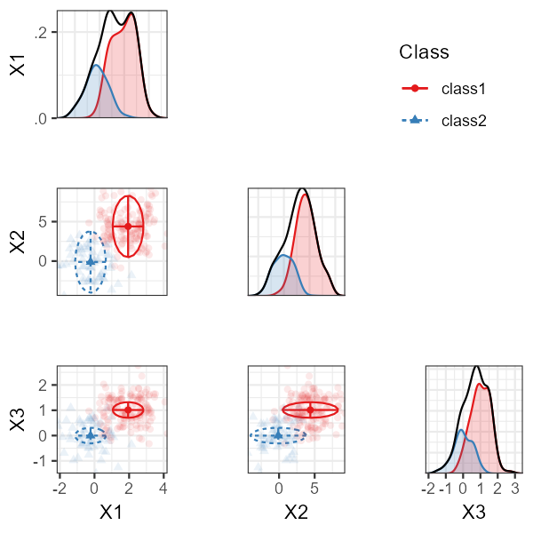

Latent class analysis for categorical indicators (LCA) and latent profile analysis for continuous indicators (LPA) are widely used mixture modeling techniques for identifying unobserved subgroups in a population. In practice, researchers often encounter mixed data types: a combination of continuous, binary, and ordinal indicators.
Estimating such models was complicated in prior versions of
tidySEM, and often led to convergence issues. The new
function mx_mixed_lca(), introduced in tidySEM
version 0.2.10, provides a high-level interface to estimate
mixed-data latent class models. At the same time, the function
mx_run() was updated to use mxTryHardOrdinal()
in case of convergence issues with ordinal categorical indicators, which
improves the estimation of mixed data LCAs.
This vignette demonstrates how to:
- Prepare mixed continuous and ordinal data
- Estimate mixed-data latent class models
- Fit multiple class solutions
- Inspect and interpret the resulting OpenMx models
Requirements
The mx_mixed_lca() function relies on
OpenMx. Make sure both packages are installed and
loaded.
Example Data
We simulate a dataset with:
- Three continuous indicators
- One ordinal indicator
- Two latent classes
set.seed(10)
n <- 200
# Set class-specific means
class_means <- c(rep(0, floor(0.3 * n)),
rep(2, ceiling(0.7 * n)))
# Simulate continuous indicators
df <- rnorm(4 * n, mean = rep(class_means, 4))
df <- matrix(df, nrow = n)
df <- t(t(df) * c(1, 2, 0.5, 1))
df <- data.frame(df)
names(df) <- paste0("X", 1:4)
# Convert one indicator to ordinal
df$X4 <- cut(df$X4, breaks = 3, labels = FALSE)
df$X4 <- mxFactor(df$X4, levels = 1:3)Model Estimation with mx_mixed_lca()
Estimating a Single Class Solution
To estimate a 2-class mixed-data latent class model, use the following code:
res_2 <- mx_mixed_lca(
data = df,
classes = 2
)The returned object is an OpenMx::mxModel, and can be
modified using the functions in that package:
class(res_2)
#> [1] "MxModel"
#> attr(,"package")
#> [1] "OpenMx"Estimating Multiple Class Solutions
A common workflow is to estimate several class solutions and compare model fit. This can be done by passing a vector of class numbers.
res_1_3 <- mx_mixed_lca(
data = df,
classes = 1:3
)The result is a list of OpenMx models, one for each class solution.
Class Enumeration
As explained in Van Lissa, Garnier-Villareal, and Anadria (2023),
there are several approaches to class enumeration. The most
straightforward best-practice approach is to examine the BIC fit index,
and select the model with the lowest BIC. This is obtained by inspecting
model fit, by printing the object, or calling
table_fit(res_1_3):
table_fit(res_1_3)#> Name Classes LL n Parameters AIC BIC saBIC Entropy
#> 1 equal 1 -1250.528 200 8 2517.055 2543.442 2518.097 1.0000000
#> 2 equal1 2 -1118.542 200 14 2265.083 2311.260 2266.906 0.9304968
#> 3 equal2 3 -1115.041 200 20 2270.083 2336.049 2272.687 0.9447551
#> prob_min prob_max n_min n_max np_ratio np_local
#> 1 1.0000000 1.0000000 1.000 1.000 25.00000 25.000000
#> 2 0.9606636 0.9942737 0.295 0.705 14.28571 9.076923
#> 3 0.9386326 0.9976012 0.075 0.630 10.00000 2.500000As expected, the BIC for the 2-class solution is lowest. Note that the 3-class solution also has an extremely low ratio of cases to parameters, so this model is most likely overfit.
Another best-practice approach to class enumeration is to perform the
bootstrapped likelihood ratio test. This gives a significance test, but
takes a long time to run. To accelerate computations, we can use the
future package for parallel computing (see
?plan to select the appropriate back-end for your system).
To track the function’s progress, we use the progressr
ecosystem, which allows users to choose how they want to be informed.
The example below uses a progress bar:
library(future)
library(progressr)
plan(multisession) # Parallel processing for Windows
handlers("progress") # Progress bar
set.seed(1)
res_blrt <- BLRT(res_1_3, replications = 100)
res_blrt#> Bootstrapped Likelihood Ratio Test:
#>
#> null alt lr df blrt_p samples
#> equal var 1 equal var 2 264 6 0.00 42
#> equal var 2 equal var 3 7 6 0.32 17This test, too, confirms that the 2-class solution is significantly better than the 1-class solution - but the 3-class solution offers no further significant improvement. Note that, by default, the BLRT conducts 100 bootstrapped analyses - but only some of these samples could be used to conduct the test, as the model did not converge in remaining iterations.
A third option is to use a predictive model comparison, a method conceptually similar to Bayesian posterior predictive checks.
#> comparison null alt null_srsm alt_srsm srmr_lb
#> 1 dif_seq equal var 1 equal var 2 0.46920642 0.06900679 -0.45910956
#> 2 dif_seq equal var 2 equal var 3 0.06900679 0.05695099 -0.05869216
#> 3 dif_one equal var 1 equal var 2 0.46920642 0.06900679 -0.45910956
#> 4 dif_one equal var 1 equal var 3 0.46920642 0.05695099 -0.47293413
#> srmr_ub sig
#> 1 -0.32814646 *
#> 2 0.03553646
#> 3 -0.32814646 *
#> 4 -0.35111805 *This test, too, confirms that the 2-class solution is significantly better than the 1-class solution - but the 3-class solution offers no further significant improvement.
Examine Results
We can investigate the class proportions for the two-class solution by calling:
class_prob(res_1_3[[2]], c("sum.posterior", "sum.mostlikely"))#> $sum.posterior
#> class count proportion
#> 1 class1 139.41514 0.6970757
#> 2 class2 60.58486 0.3029243
#>
#> $sum.mostlikely
#> class count proportion
#> 1 class1 141 0.705
#> 2 class2 59 0.295The sum.posterior class probabilities incorporate classification error; each case can (fractionally) contribute to multiple classes.
The sum.mostlikely class probabilities ignore classification error, assigning each case to the class it has the highest class probability for.
Note that, in this case, both correspond nicely to the simulated .3/.7 split. Thus, we should have good class discrimination.
This is confirmed by checking:
table_fit(res_1_3[[2]])#> Minus2LogLikelihood n Parameters observedStatistics df TLI RMSEA
#> 1 2237.083 200 14 1600 1586 1 0
#> RMSEASquared RMSEANull modelName AIC BIC saBIC Classes
#> 1 0 0.05 equal var 2 2265.083 2311.26 2266.906 2
#> Entropy prob_min prob_max n_min n_max LL
#> 1 0.9304968 0.9606636 0.9942737 0.295 0.705 -1118.542We have a high minimal- and maximal posterior classification probability, and a high entropy.
Finally, we can examine the parameter values using
table_results() on the second element of the model list, or
the 2-class model:
table_results(res_1_3[[2]])#> label est_sig se pval confint class
#> 1 Means.X1 1.94*** 0.08 0.00 [1.78, 2.10] class1
#> 2 Means.X2 4.39*** 0.17 0.00 [4.05, 4.73] class1
#> 3 Means.X3 1.01*** 0.05 0.00 [0.92, 1.11] class1
#> 4 Variances.X1 0.89*** 0.09 0.00 [0.71, 1.07] class1
#> 5 Variances.X2 3.94*** 0.42 0.00 [3.12, 4.75] class1
#> 6 Variances.X3 0.31*** 0.03 0.00 [0.25, 0.37] class1
#> 7 Variances.X4 1.00 NA NA <NA> class1
#> 8 class1.Thresholds[1,1] -1.24*** 0.15 0.00 [-1.52, -0.95] class1
#> 9 class1.Thresholds[2,1] 0.89*** 0.12 0.00 [0.65, 1.13] class1
#> 10 Means.X1 -0.23 0.13 0.07 [-0.48, 0.02] class2
#> 11 Means.X2 -0.11 0.27 0.67 [-0.64, 0.41] class2
#> 12 Means.X3 -0.00 0.07 0.98 [-0.15, 0.14] class2
#> 13 Variances.X4 1.00 NA NA <NA> class2
#> 14 class2.Thresholds[1,1] 0.65*** 0.18 0.00 [0.29, 1.01] class2
#> 15 class2.Thresholds[2,1] 7.11 35680.19 1.00 [-69924.78, 69939.01] class2
#> 16 equal var 2.weights[1,1] 1.00 NA NA <NA> <NA>
#> 17 equal var 2.weights[1,2] 0.43*** 0.07 0.00 [0.30, 0.57] <NA>Note that we get free means for each class, with the variances
constrained to be equal across classes. For the categorical variable, we
get thresholds: These correspond to quartiles of a normal distribution.
For class 1, the probability of scoring within the first response
category corresponds to pnorm(-2.38, lower.tail = TRUE), or
about 1%. To convert these thresholds to the probability scale, we can
run:
table_prob(res_1_3[[2]])#> Variable Category Probability group
#> 1 X4 1 1.082529e-01 class1
#> 2 X4 2 7.052537e-01 class1
#> 3 X4 3 1.864934e-01 class1
#> 4 X4 1 7.412398e-01 class2
#> 5 X4 2 2.587602e-01 class2
#> 6 X4 3 5.663248e-13 class2Advanced Options
Additional arguments can be passed via ... and are
forwarded to the underlying model-building functions. For example, you
can release the variance constraints for the continuous indicators by
passing the variances argument of
mx_profiles():
res_2_free <- mx_mixed_lca(
data = df,
classes = 2,
variances = "varying"
)We can compare the BICs of these models to determine whether the added complexity improves the model fit:
#> Name Classes LL n Parameters AIC BIC saBIC
#> 1 fixed_covs 2 -1118.542 200 14 2265.083 2311.260 2266.906
#> 2 free_covs 2 -1117.967 200 17 2269.935 2326.006 2272.148
#> Entropy prob_min prob_max n_min n_max np_ratio np_local
#> 1 0.9304968 0.9606636 0.9942737 0.295 0.705 14.28571 9.076923
#> 2 0.9353582 0.9680273 0.9931100 0.295 0.705 11.76471 7.375000Note that the BIC of the model with free covariances is higher than that of the model with fixed variances, so it fits worse. This is as expected, because we did not simulate class-specific variances.
Plotting the Model
The model can be plot with the usual functions, but note that categorical indicators will not look good in plots for continuous indicators, and could lead to errors.
Thus, for example, we can use a profile plot for the continuous indicators:
plot_profiles(res_1_3[[2]], variables = c("X1", "X2", "X3"))
Alternatively, we can use a bivariate plot with densities:
plot_bivariate(res_1_3[[2]], variables = c("X1", "X2", "X3"))
We can plot the categorical variables as follows:
plot_prob(res_1_3[[2]])
References
Van Lissa, C. J., Garnier-Villarreal, M., & Anadria, D. (2023). Recommended Practices in Latent Class Analysis using the Open-Source R-Package tidySEM. Structural Equation Modeling. https://doi.org/10.1080/10705511.2023.2250920